.jpg)

Monkey D. Luffy
Monkey D. Luffy, also known as " Straw Hat Luffy" and commonly as "Straw Hat" is the main protagonist of the manga and anime, One Piece. He is the founder and captain of the increasingly infamous and powerful Straw Hat Pirates, as well as one of its top fighters.He is also one of the Four Emperors that rule over the New World.His lifelong dream is to become the Pirate King by finding the legendary treasure left behind by the late Gol D. Roger.He believes that being the Pirate King means having the most freedom in the world.
Roronoa Zoro
Roronoa Zoro,[1] also known as "Pirate Hunter" Zoro,[7] is the combatant of the Straw Hat Pirates, and one of their two swordsmen. Formerly a bounty hunter,[5] he is the second member of Luffy's crew and the first to join it, doing so in the Romance Dawn Arc.[3] As a master of Three Sword Style, a swordsmanship style which he created during his childhood training in Shimotsuki Village, Zoro is among the three most powerful combatants of the Straw Hats, alongside Luffy and Sanji.[19][20] His dream is to become the greatest swordsman in the world, in order to honor a promise he made to his deceased childhood friend Kuina.[21]

Nami
"Cat Burglar" Nami[6] is the navigator of the Straw Hat Pirates. She is the third member of the crew and the second to join, doing so during the Orange Town Arc.[20] She is the adoptive sister of Nojiko after the two were orphaned and taken in by Bell-mère. She was formerly a member of the Arlong Pirates and initially joined the Straw Hats so that she could rob them in order to buy back her village from Arlong. However, she legitimately joined the Straw Hats after they rebelled against and defeated Arlong. Her dream is to make a map of the entire world.[21] She currently has a bounty of Beli.png66,000,000.[18]
Usopp
"God" Usopp is the sniper of the Straw Hat Pirates. He is the fourth member of the crew and the third to join, doing so at the end of the Syrup Village Arc. Although he left the crew during the Water 7 Arc, he rejoined at the end of the Post-Enies Lobby Arc.[17] Usopp is the son of Yasopp and Banchina. He was born and raised in Syrup Village, serving as "captain" of the Usopp Pirates and being Kaya's close friend. After working with the Straw Hats to defeat Kuro and the Black Cat Pirates, he was invited to join the crew. Despite his usual cowardice, Usopp dreams of becoming a brave warrior of the sea just like his father and lives every day in pursuit of living up to this dream.
Sanji
"Black Leg" Sanji,[6] born as Vinsmoke Sanji,[25][26][27] is the cook of the Straw Hat Pirates. He is the fifth member of the crew and the fourth to join, doing so at the end of the Baratie Arc. Born as the third son and fourth child of the Vinsmoke Family[28] (thus making him a former prince of the Germa Kingdom), he disowned his family twice, once in his youth and again after reuniting with them as an adult.[29] After fleeing the Vinsmokes as a child, he eventually entered the care of Zeff as the sous chef of the Baratie, where he would remain until he met Monkey D. Luffy, who convinced him to join his crew.
Chopper
Tony Tony Chopper, also known as "Cotton Candy Lover" Chopper,[5] is the doctor of the Straw Hat Pirates. He is the sixth member of the crew and the fifth to join, doing so at the end of the Drum Island Arc. He was temporarily forced to join the Foxy Pirates during the Long Ring Long Land Arc, but was quickly returned to Luffy's crew. Chopper is a reindeer that ate the Hito Hito no Mi, a Devil Fruit that allows its user to transform into a human hybrid or a human at will. He came from Drum Island and was taught how to be a doctor by his two parental figures, Doctors Hiriluk and Kureha. His dream is to one day become a doctor capable of curing any disease and wants to travel all across the world specifically in the hopes of accomplishing this dream.

Nico Robin
Nico Robin,[1] also known by her epithet "Devil Child"[6] and the "Light of the Revolution",[7] is the archaeologist of the Straw Hat Pirates. She is the seventh member of the crew and the sixth to join, doing so at the end of the Arabasta Arc. She temporarily left the crew during the Water 7 Arc, but rejoined during the Enies Lobby Arc. Robin ate the Hana Hana no Mi at a young age, giving her the power to reproduce her body parts (or her entire body) on any surface at will. As the sole survivor of the destroyed West Blue island Ohara, she is currently the only person in the world known to have the ability to read and decipher Poneglyphs, a skill which is considered forbidden and threatening to the World Government.

Franky
"Iron Man" Franky[17][5] is the shipwright of the Straw Hat Pirates. He is the crew's eighth member and the seventh to join, doing so at the end of the Post-Enies Lobby Arc.[18] Born "Cutty Flam",[19] he chose to go by his nickname of "Franky" until eventually permanently discarding his true name per the request of Iceburg to hide his identity.[20] Originally from the South Blue,[21] Franky was abandoned by his family as a four-year-old, eventually making his way to Water 7. There, he came to be a member of Tom's Workers, until an incident resulted in his body being heavily damaged and requiring him to augment himself into a cyborg. Upon returning to Water 7, he became the leader of the Franky Family, a group of ship dismantlers and bounty hunters.[2]
Brook
"Soul King" Brook[16] is the musician of the Straw Hat Pirates, and one of their two swordsmen. He is the ninth member of the crew and the eighth to join,[17] doing so at the end of the Thriller Bark Arc. Brook ate the Yomi Yomi no Mi, which allowed him to return to life after death once.[15] Brook eventually learned to tap deeper into the powers of his Devil Fruit, giving him significant control over his own soul and the souls of others. His dream is to reunite with his old friend, Laboon, at Reverse Mountain, where he resides with Crocus.[18]
Jinbe
"Knight of the Sea" Jinbe[1] is the helmsman of the Straw Hat Pirates. He is the tenth member of the crew and the ninth to join, doing so during the Wano Country Arc.[18] Jinbe is a whale shark fish-man and a powerful master of Fish-Man Karate. His dream is to fulfill his former captain Fisher Tiger's dying wish of coexistence and equality between humans and fish-men. He was a member of the Sun Pirates, eventually becoming its second captain after the death of their original captain, Tiger.[8] He eventually became one of the Seven Warlords of the Sea, though he resigned during the Summit War of Marineford.[4][8]
Gallery
-
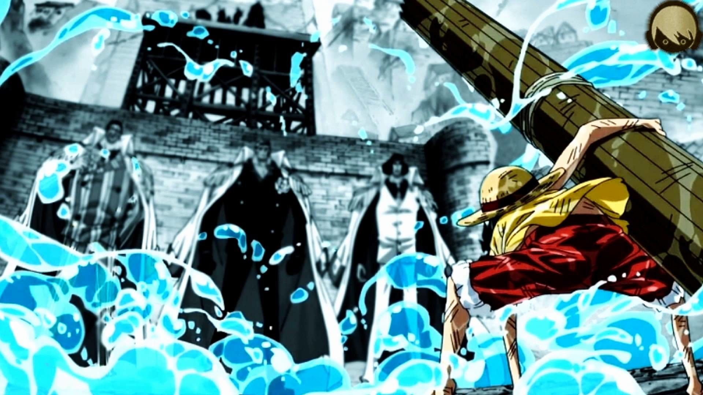
.jpg) 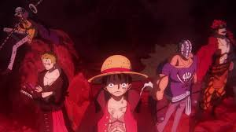
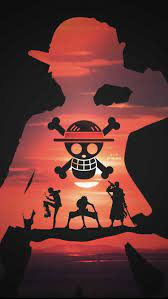
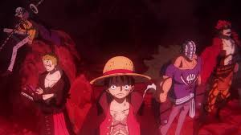
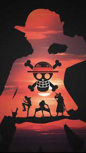
- 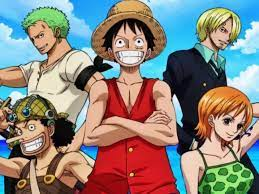 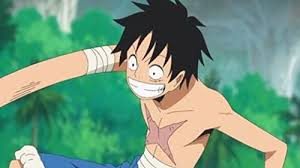 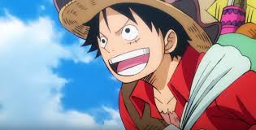 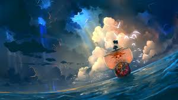
-
.jpg) 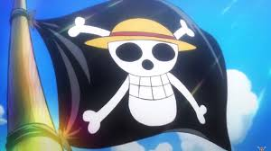
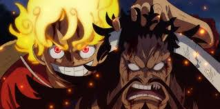
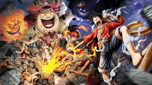
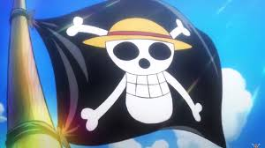
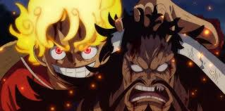
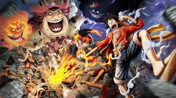